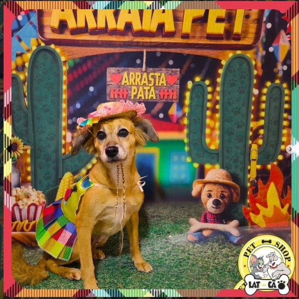
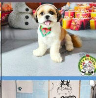
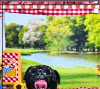
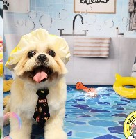
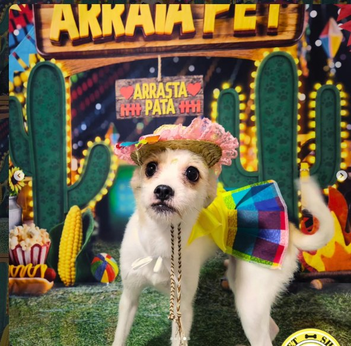
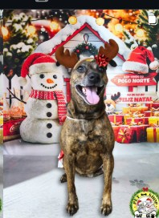
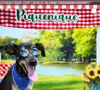
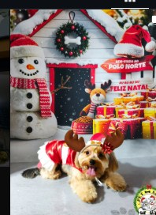

🛁
Banho & Tosa
Higiene e cuidado com muito carinho e capricho.
Carinho, cuidado e muita alegria para seu pet. Banho e tosa, rações, acessórios e leva e traz em Ayrosa, Osasco.
Serviços e produtos pensados para deixar seu companheiro ainda mais feliz.
Higiene e cuidado com muito carinho e capricho.
Mais praticidade para a rotina do seu pet. Consulte a disponibilidade.
Opções de alimentação para o seu melhor amigo.
Itens e acessórios para o dia a dia dos pets.
Um pouquinho dos nossos AUmigos e dos momentos especiais que compartilhamos.







Depoimentos compartilhados nas avaliações do Google.
“Um excelente atendimento, ótimos preços, boa variedade de produtos.”
— Cibele Costa“Super atenciosos com os pets e o capricho na entrega é nota mil 🥇”
— Raphael Alcantara“Trabalho com excelência deixo me filho de quatro patas em ótimas mãos”
— Ana Cristina Borges
No Pet Shop Lat-Cão, cada pet é recebido com atenção, respeito e carinho. Nosso compromisso é oferecer cuidado, conforto e praticidade para você e seu companheiro de quatro patas.
Estamos no bairro Ayrosa, em Osasco, prontos para receber você e seu pet!
Venha nos visitar ↗Estamos esperando você e seu AUmigo de patinhas abertas.